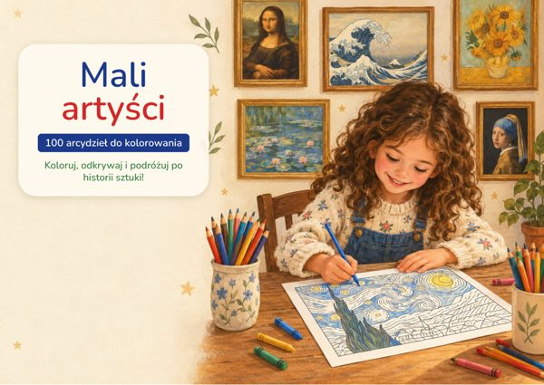

Książka główna
Mali artyści – 100 arcydzieł do kolorowania
100 arcydzieł autorstwa 60 wielkich artystów, do kolorowania według numerów, z historią każdego dzieła.
Twoje bonusy
Bonus 1
Pierwsze kroki – 7 dni małego mistrza
7 dni, każdego dnia jedno arcydzieło i jedna mała misja: obserwuj, koloruj, opowiadaj.
Bonus 2
Polowanie na szczegóły – 30 misji w muzeum
30 misji obserwacyjnych, by szukać kolorów, kształtów i szczegółów ukrytych w obrazach.
Bonus 3
Moja pierwsza wystawa – kompletny zestaw wystawowy
Etykiety, zaproszenia, plakat, paszporty, księga wrażeń i dyplom na domową wystawę.
Od czego zacząć?
- Otwórz książkę główną, wybierz dzieło spośród 100 dzieł i wydrukuj stronę na papierze A4, w rzeczywistym rozmiarze.
- Obejrzyj oryginalny obraz, przeczytaj ciekawostki i pokoloruj rysunek według legendy kolorów.
- Potem przejdź do 7-dniowego programu z bonusu „Pierwsze kroki” i do 30 misji z bonusu „Polowanie na szczegóły”.
- Kiedy uzbiera się kilka gotowych obrazków, zorganizujcie wystawę za pomocą zestawu „Moja pierwsza wystawa”.
Do użytku osobistego, w rodzinie lub w klasie. Odsprzedaż i rozpowszechnianie są zabronione.